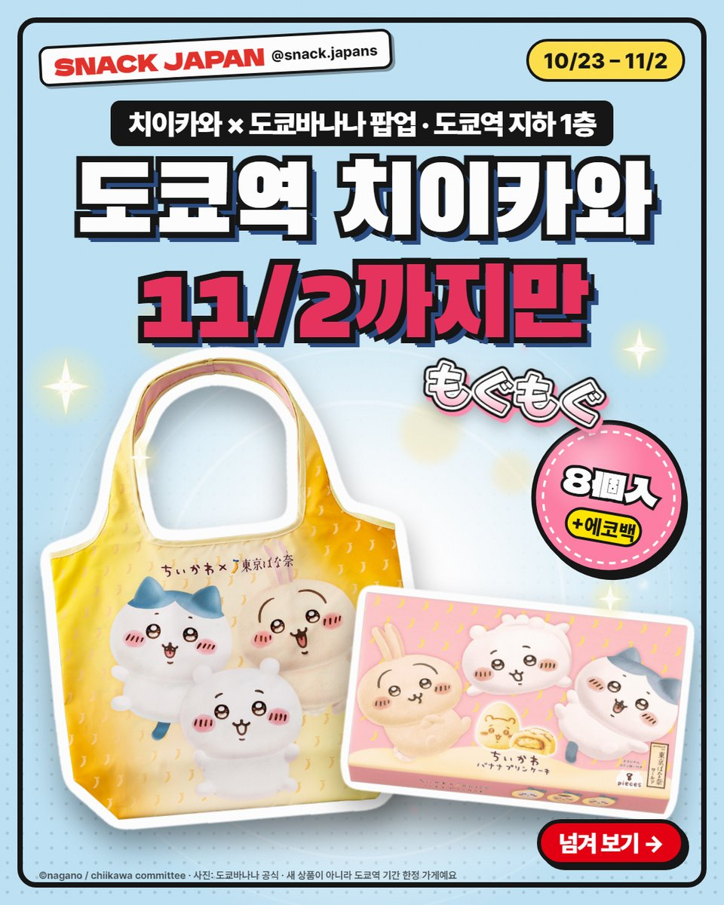
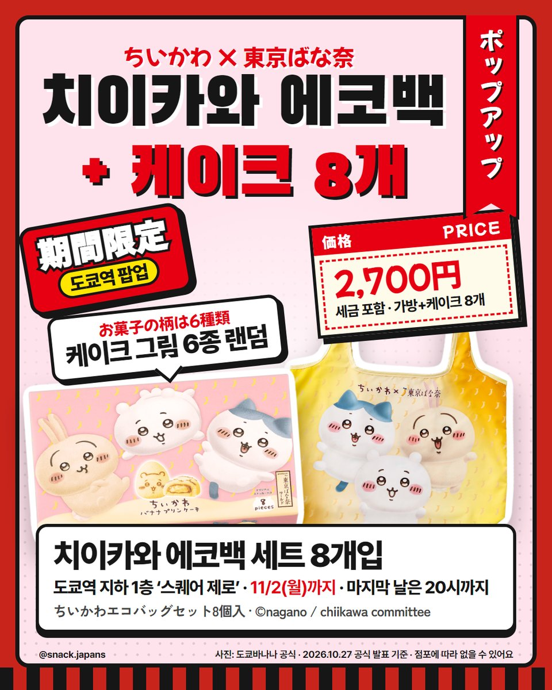
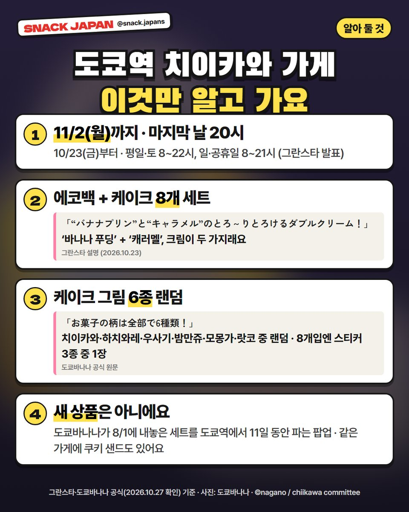
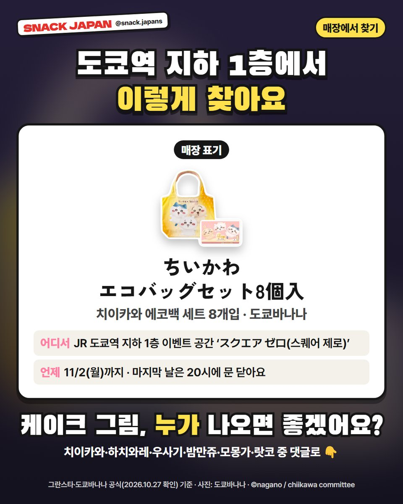

도쿄역 치이카와 도쿄바나나 팝업, 지하 1층 스퀘어 제로에서 11/2까지만
도쿄역 지하에 치이카와 × 도쿄바나나 가게가 11/2(월)까지만 열려요! 에코백 + 바나나 푸딩 케이크 8개 세트, 가기 전에 알아 둘 것을 정리했어요.
도쿄역에 치이카와가 떴어요?! 🍌
도쿄역 지하 '스퀘어 제로'에
치이카와 × 도쿄바나나 가게가 열렸어요.
11/2(월)까지만이라 도쿄 가는 분들은 주목!
그란스타·도쿄바나나 공식 안내 기준으로 정리해 볼게요.

1. 언제·어디서?
- 이름: 期間限定ショップ「東京ばな奈（ちいかわ）」
- 장소: JR 도쿄역 지하 1층 이벤트 공간 '스퀘어 제로(スクエア ゼロ)', 개찰구 안
- 기간: 10/23(금) ~ 11/2(월)
- 시간: 평일·토 8~22시, 일·공휴일 8~21시
- 마지막 날 11/2는 20시에 문을 닫아요
2. 새 상품은 아니에요
도쿄바나나가 8/1에 내놓은 치이카와 세트를
도쿄역에서 11일 동안 파는 기간 한정 가게예요.
도쿄역을 지나가는 날이 겹친다면 들러 볼 만해요.

3. 에코백 + 바나나 푸딩 케이크 8개 세트
- 이름: ちいかわエコバッグセット8個入
- 치이카와·하치와레·우사기가 그려진 에코백 + 바나나 푸딩 케이크 8개
- 케이크는 '바나나 푸딩'과 '캐러멜' 크림 두 가지가 들어 있대요 (그란스타 설명)
- 도쿄바나나 설명으로는 작게 접혀서 들고 다니기 좋은 가방이래요
- 가격: 사진 카드에 정리해 뒀어요

4. 케이크 그림은 6종 랜덤
도쿄바나나 공식 페이지에 따르면
케이크 그림은 치이카와·하치와레·우사기·밤만쥬·모몽가·랏코 6종이고
무작위로 들어가서 한 상자에 다 모이지 않을 수도 있대요.
- 8개입에는 오리지널 스티커 3종 중 1장이 랜덤으로 들어 있어요
- 같은 가게에서 '쿠키 샌드'도 팔아요

5. 매장에서 찾는 법
- 매장 표기: ちいかわエコバッグセット8個入
- 가게 이름: 東京ばな奈（ちいかわ）
- 장소: JR 도쿄역 지하 1층 'スクエア ゼロ'
- 개찰구 안 한가운데라 기차표나 입장권이 있어야 들어가요 (그란스타 공식 안내)
- 쿠키 샌드 가격은 공식 안내에 없어서 적지 않았어요
총평
- 기준: 그란스타 공식 안내(10/23)·도쿄바나나 공식 페이지, 10월 27일 확인
- 참고: 직접 먹어 보지 않아서 회사 설명만 옮겼어요
- 추천: 11/2까지 도쿄역을 지나는 분, 치이카와 굿즈 모으는 분
케이크 그림, 누가 나오면 좋겠어요?
댓글로 알려 주세요 🍌
사진: 도쿄바나나 공식 · ©nagano / chiikawa committee